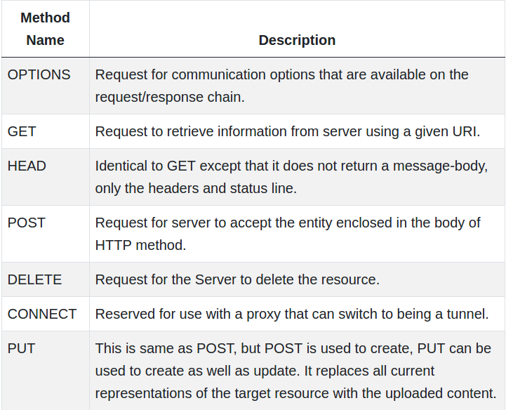

Web consists of billions of clients and server connected through wires and wireless networks.The web clients make requests to web server.The web server receives the request, finds the resources and return the response to the client. When a server answers a request, it usually sends some type of content to the client.The client uses web browser to send request to the server. The server often sends response to the browser with a set of instructions written in HTML(HyperText Markup Language).All browsers know how to display HTML page to the client.Internet is a global communication system that links together thousands of individual networks. It allows exchange of information between two or more computers on a network. Thus internet helps in transfer of messages through mail, chat, video & audio conference, etc. It has become mandatory for day-to-day activities: bills payment, online shopping and surfing, tutoring, working, communicating with peers, etc.
In this topic, we are going to discuss in detail about concepts like basics of computer networks, Local Area Network (LAN), Wide Area Network (WAN), concept of internet, basics of internet architecture, services on internet, World Wide Web and websites, communication on internet, internet services, preparing computer for internet access, ISPs and examples (Broadband/Dialup/Wi-Fi), internet access techniques, web browsing software, popular web browsing software, configuring web browser, search engines, popular search engines/search for content, accessing web browser, using favorites folder, downloading web pages and printing web pages.
A website is a collection of static files(webpages) such as HTML pages, images, graphics etc. A Web application is a web site with dynamic functionality on the server. Google, Facebook, Twitter are examples of web applications. HTTP (Hypertext Transfer Protocol). HTTP is a protocol that clients and servers use on the web to communicate.It is similar to other internet protocols such as SMTP(Simple Mail Transfer Protocol) and FTP(File Transfer Protocol) but there is one fundamental difference.
HTTP is a stateless protocol i.e HTTP supports only one request per connection. This means that with HTTP the clients connect to the server to send one request and then disconnects. This mechanism allows more users to connect to a given server over a period of time. The client sends an HTTP request and the server answers with an HTML page to the client, using HTTP.
Go Top
HTTP request can be made using a variety of methods, but the ones you will use most often are Get and Post. The method name tells the server the kind of request that is being made, and how the rest of the message will be formated.
HTTP Methods and Descriptions :
 Go TopThe client-server model, or client-server architecture, is a distributed application framework dividing tasks between servers and clients, which either reside in the same system or communicate through a computer network or the Internet. The client relies on sending a request to another program in order to access a service made available by a server. The server runs one or more programs that share resources with and distribute work among clients. The client server relationship communicates in a request–response messaging pattern and must adhere to a common communications protocol, which formally defines the rules, language, and dialog patterns to be used. Client-server communication typically adheres to the TCP/IP protocol suite.
TCP protocol maintains a connection until the client and server have completed the message exchange. TCP protocol determines the best way to distribute application data into packets that networks can deliver, transfers packets to and receives packets from the network, and manages flow control and retransmission of dropped or garbled packets. IP is a connectionless protocol in which each packet traveling through the Internet is an independent unit of data unrelated to any other data units.
Client requests are organized and prioritized in a scheduling system, which helps servers cope in the instance of receiving requests from many distinct clients in a short space of time. The client-server approach enables any general-purpose computer to expand its capabilities by utilizing the shared resources of other hosts. Popular client-server applications include email, the World Wide Web, and network printing.
Go Top
One-Tier architecture: consists of a simple program running on a single computer without requiring access to the network. User requests don’t manage any network protocols, therefore the code is simple and the network is relieved of the extra traffic. Two-Tier architecture: consists of the client, the server, and the protocol that links the two tiers. The Graphical User Interface code resides on the client host and the domain logic resides on the server host. The client-server GUI is written in high-level languages such as C++ and Java.
Three-Tier architecture: consists of a presentation tier, which is the User Interface layer, the application tier, which is the service layer that performs detailed processing, and the data tier, which consists of a database server that stores information. N-Tier architecture: divides an application into logical layers, which separate responsibilities and manage dependencies, and physical tiers, which run on separate machines, improve scalability, and add latency from the additional network communication. N-Tier architecture can be closed-layer, in which a layer can only communicate with the next layer down, or open-layer, in which a layer can communicate with any layers below it.
Microsoft MySQL Server is a popular example of a three-tier architecture, consisting of three major components: a protocol layer, a relational engine, and a storage engine. Any client machines that connect directly to SQL Server must have a SQL Server client installed. Microsoft’s Client-Server Runtime Process helps manage the majority of the graphical instruction sets on Windows operating system.
Go Top
A client-server network is the medium through which clients access resources and services from a central computer, via either a local area network (LAN) or a wide-area network (WAN), such as the Internet. A unique server called a daemon may be employed for the sole purpose of awaiting client requests, at which point the network connection is initiated until the client request has been fulfilled.
Network traffic is categorized as client-to-server (north-south traffic) or server-to-server (east-west traffic). Popular network services include e-mail, file sharing, printing, and the World Wide Web. A major advantage of the client-server network is the central management of applications and data.
Go Top
A single server hosting all the required data in a single place facilitates easy protection of data and management of user authorization and authentication.
Resources such as network segments, servers, and computers can be added to a client-server network without any significant interruptions. Data can be accessed efficiently without requiring clients and the server to be in close proximity. All nodes in the client-server system are independent, requesting data only from the server, which facilitates easy upgrades, replacements, and relocation of the nodes. Data that is transferred through client-server protocols are platform-agnostic. Go Top
Any web application, big or small, contains these major components:
In case you opt for a static web app, you should be aware that such type of web application displays a small amount of content and is non-flexible. These applications are developed in CSS and HTML. It may include animated objects like videos, GIFs, banners, etc. You can develop it with the help of Ajax and jQuery. Here content modification is not very convenient. To accomplish the task, developers have to firstly download the HTML code, change it and then upload it to the server. Such modifications can be done by the developer or the developer company who is in-charge of the app designing and development.